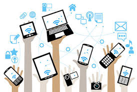
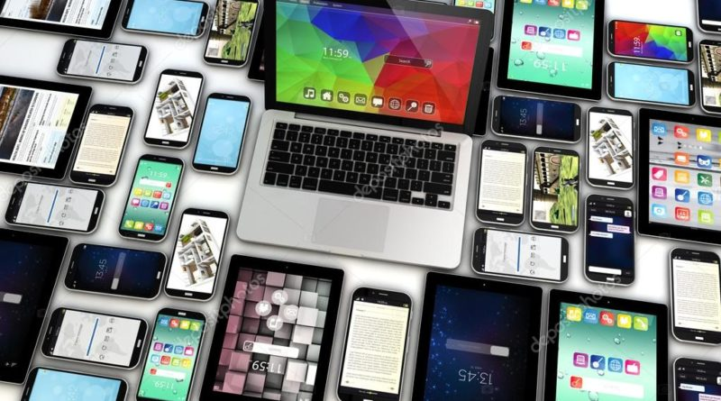

Che cosa èUn dispositivo mobile, in informatica e elettronica, indica tutti quei dispositivi elettronici che sono pienamente utilizzabili seguendo la mobilità dell'utente quali telefoni cellulari, palmari, smartphone, tablet, laptop, lettori MP3, ricevitori GPS ecc. L'espressione "computer mobile" (mobile computer) viene talvolta usata per riferirsi alle apparecchiature utilizzate. Con il termine Mobile Internet Device (spesso abbreviato in MID) vengono indicati invece alcuni particolari dispositivi destinati soprattutto alla navigazione in Internet e pensati soprattutto per un pubblico non professionale, il cui sviluppo è stato portato avanti nel corso del 2007. |
 |
DescrizioneLa tecnologia dei computer mobili si distingue da quella dei computer portatili in quanto enfatizza la possibilità di usare il computer anche in movimento (per esempio in automobile). Possono essere dunque dispositivi dedicati oppure general purpose*, comunque di dimensioni e peso ridotti tali da poter essere trasportati dall'utente. Storicamente i primi dispositivi di questo tipo sono stati i telefoni cellulari di prima generazione. Alcuni di questi dispositivi quali telefoni cellulari, smartphone e tablet assumono importanza all'interno del contesto del cosiddetto web mobile con fette di mercato in continua espansione. La caratteristica peculiare di questi dispositivi è in genere la minor capacità di elaborazione o processamento e memorizzazione attraverso processori meno veloci e memorie meno capienti rispetto ai dispositivi fissi, per via delle loro dimensioni ridotte e della conseguente semplificazione dell'hardware. In molti casi fanno uso di sistemi operativi e applicazioni ad hoc, in linea con le risorse hardware che possiedono. Fanno eccezione i laptop che hanno ormai raggiunto prestazioni e caratteristiche hardware/software del tutto simili ai dispositivi fissi. Avvicinandoci al prossimo futuro possiamo notare che quest’ultimo renderà questi dispositivi sempre più simili nelle prestazioni ai dispositivi fissi pur mantenendo le loro peculiarità in termini di dimensioni ridotte. Un problema molto sentito inerente ai dispositivi mobili connessi al web è quello della sicurezza. |
 |
←precedente Prossimo →